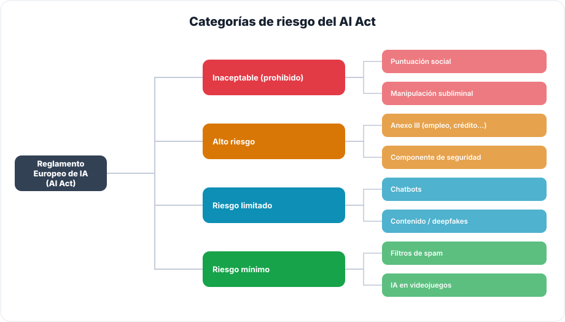
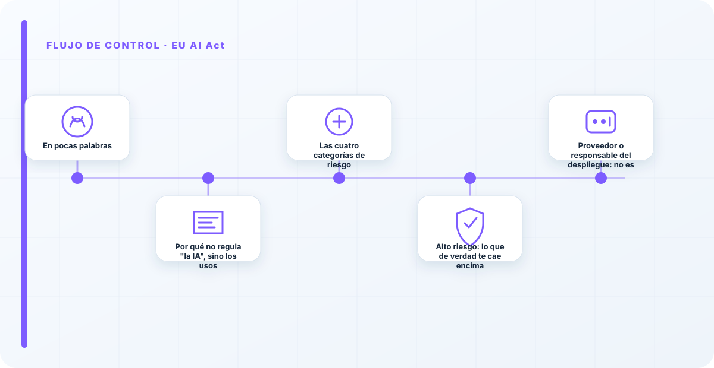
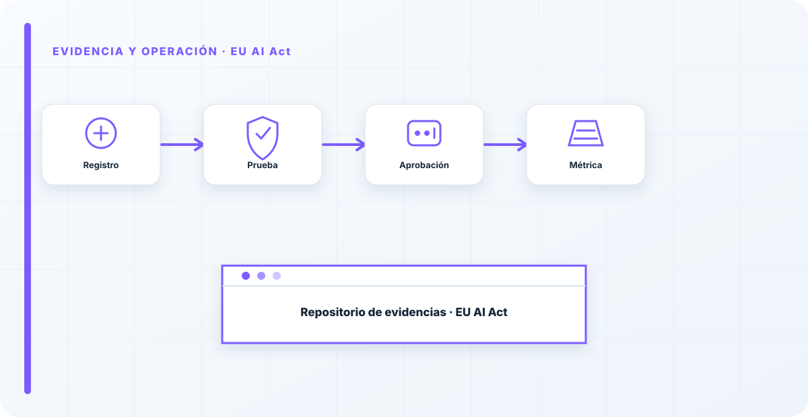

En pocas palabras
El AI Act es lo primero que me miran los clientes con miedo, y casi siempre por el motivo equivocado. No regula "la inteligencia artificial" en bloque: regula usos, y clasifica cada uno por su riesgo. El mismo modelo puede ser riesgo mínimo en un caso y alto riesgo en otro. Por eso, antes de hablar de obligaciones, de multas o de plazos, hay una única pregunta que importa: ¿en qué categoría cae tu caso de uso concreto? De ahí cuelga absolutamente todo lo demás.
Por qué no regula "la IA", sino los usos
Es el malentendido que más tiempo me hace perder. La gente llega pensando que el Reglamento le dice qué modelos puede usar, y no va de eso. Va del para qué. Un modelo de lenguaje resumiendo actas internas es una cosa; ese mismo modelo decidiendo a quién se contrata es otra completamente distinta, con obligaciones legales pesadas. La tecnología es la misma; el riesgo —y por tanto la ley— cambia con el uso.
Entender esto lo cambia todo, porque significa que el cumplimiento del AI Act no empieza en el departamento técnico, empieza en el inventario de casos de uso. Si no sabes para qué usas la IA, no puedes clasificarla; y si no la clasificas, no sabes qué te obliga la ley. Por eso insisto tanto en el inventario y el gobierno antes que en la norma.
Las cuatro categorías de riesgo
El Reglamento ordena los usos en cuatro niveles, y a más riesgo, más obligaciones. Este es el mapa que tengo siempre delante:

Arriba, lo inaceptable: prácticas prohibidas en la UE, como la puntuación social o la manipulación subliminal. Debajo, el alto riesgo: los usos del Anexo III —empleo, educación, crédito, biometría, servicios esenciales— y los que son componente de seguridad de un producto regulado. Luego el riesgo limitado: chatbots y contenido generado, con obligaciones de transparencia. Y abajo, el riesgo mínimo: la inmensa mayoría de usos, sin obligaciones específicas. La mayor parte de lo que hace una organización cae en la base de la pirámide; el problema es identificar lo que no.

Alto riesgo: lo que de verdad te cae encima
Si tu caso es alto riesgo, ahí es donde el Reglamento tiene dientes. En la práctica se traduce en un paquete de obligaciones: un sistema de gestión de riesgos, gobernanza de los datos de entrenamiento y prueba, documentación técnica, registro de eventos, transparencia hacia el usuario, supervisión humana efectiva, y niveles adecuados de precisión, robustez y ciberseguridad. No es un formulario; es una forma de trabajar durante toda la vida del sistema.
Lo que le digo siempre a un cliente en alto riesgo: esto no se resuelve con un documento antes de la auditoría, se resuelve teniendo un sistema de gestión que produzca esa evidencia sola. Y ahí es donde ISO/IEC 42001 encaja como anillo al dedo, porque te da el esqueleto para cumplir gran parte de esas obligaciones de forma ordenada.
Proveedor o responsable del despliegue: no es lo mismo
Una distinción que mucha gente pasa por alto y que cambia qué te toca hacer: no es igual ser proveedor del sistema de IA —quien lo desarrolla o lo pone en el mercado— que ser responsable del despliegue —quien lo usa en su organización—. Las obligaciones se reparten distinto. Si integras una IA de un tercero, probablemente eres responsable del despliegue, y tus deberes son otros que los del que la fabricó. Aclarar tu rol para cada sistema es de los primeros pasos, porque determina la lista de lo que tienes que cumplir.
El error que más veo es empezar la casa por el tejado: gente estudiando el articulado del Reglamento sin haber clasificado un solo caso de uso. El AI Act no se "estudia", se aplica a casos concretos. Clasifica primero, y descubrirás que el 90% de lo que te preocupaba es riesgo mínimo y que el trabajo de verdad está en los dos o tres usos de alto riesgo que no habías identificado.
Los errores que veo una y otra vez
- Tratar el Reglamento como un todo en vez de clasificar caso por caso.
- No saber si eres proveedor o responsable del despliegue, y aplicar las obligaciones que no son.
- Resolver el alto riesgo con un PDF en vez de con un sistema de gestión que deje evidencia.
- Olvidar la IA embebida en SaaS, que también cuenta y casi nunca está inventariada.
- Confundir cumplir con documentar. La supervisión humana se ejerce, no se declara.
Cómo lo abordo
Mi secuencia es siempre la misma: inventariar los usos de IA, clasificar cada uno por riesgo, aclarar tu rol (proveedor o responsable) en cada caso, y concentrar el esfuerzo en los de alto riesgo, apoyándome en un sistema de gestión para producir la evidencia. Para la clasificación inicial tienes el clasificador interactivo de esta misma biblioteca.
Cómo lo llevaría a un entorno real
Cuando aterrizo eu ai act en una organización, no empiezo por comprar una herramienta ni por redactar veinte páginas. Empiezo por dibujar qué ocurre hoy: quién solicita el cambio, quién lo aprueba, qué sistemas intervienen, qué datos cruzan el proceso y quién se entera cuando algo falla. Ese dibujo suele descubrir más problemas que cualquier checklist. En riesgo y cumplimiento, lo peligroso no es solo carecer de controles; también lo es creer que existen porque alguien los escribió una vez.
Después separo lo imprescindible de lo deseable. Lo imprescindible debe poder comprobarse: un responsable identificado, una regla clara, una evidencia fechada y un mecanismo para reaccionar. En este caso revisaría especialmente caso de uso, rol regulatorio y clasificación. No me vale una respuesta del tipo «lo gestiona el proveedor» o «eso lo mira seguridad». Necesito saber qué persona toma la decisión, con qué información y dentro de qué plazo.
La implantación debe crecer con el riesgo. Un piloto interno puede funcionar con una ficha breve y una revisión manual. Un sistema que afecta a clientes, empleados, dinero o información sensible necesita segregación de funciones, pruebas independientes, monitorización y un expediente mantenido. Mi criterio es sencillo: cuanto más difícil sea deshacer el daño, más fuerte debe ser la barrera antes de producción.

Decisiones que deben quedar por escrito
Hay decisiones que no deberían vivir en una reunión ni en un mensaje de chat. Para eu ai act dejaría documentados el alcance, los supuestos, los límites de uso, las excepciones aceptadas y las condiciones que obligan a detener o reevaluar. El documento no tiene que ser enorme, pero sí debe permitir que otra persona entienda por qué se hizo lo que se hizo.
También registraría quién puede cambiar obligación, quién valida expediente y quién recibe las alertas relacionadas con vigilancia. Cuando esas tres responsabilidades se mezclan, aparece el clásico problema: el mismo equipo construye, aprueba y declara que todo funciona. No siempre se puede separar por completo, sobre todo en organizaciones pequeñas, pero al menos debe existir una revisión por alguien que no dependa del éxito inmediato del despliegue.
Las excepciones merecen un tratamiento propio. Una excepción sin fecha de caducidad acaba convirtiéndose en la arquitectura real. Por eso exigiría motivo, riesgo aceptado, responsable, compensaciones, fecha de revisión y criterio de cierre. Si falta uno de esos elementos, no es una excepción gestionada; es una deuda invisible.
Un ejemplo práctico
Imaginemos que un equipo quiere incorporar eu ai act a un servicio que ya está en producción. La propuesta promete reducir tiempos y automatizar tareas, pero utiliza componentes que cambian con frecuencia. Antes de aprobarlo, pediría una prueba limitada, un inventario de dependencias, un flujo de datos y una definición clara de qué acciones quedan fuera del alcance.
Durante la prueba recogería resultados normales y casos límite. No solo miraría si funciona; comprobaría qué ocurre cuando faltan datos, cambia una versión, se pierde conectividad, llega una entrada manipulada o un usuario intenta superar sus permisos. Ahí es donde se ve si el diseño aguanta. En muchas pruebas felices todo parece seguro porque nadie ha intentado romper la hipótesis de partida.
Si los resultados son aceptables, la salida a producción tendría condiciones: versión fijada, configuración aprobada, logs disponibles, responsables de guardia, procedimiento de rollback y revisión tras las primeras semanas. Si alguno de esos elementos no existe, prefiero retrasar el despliegue. Un día de demora suele ser más barato que investigar después un comportamiento que nadie puede reconstruir.
Qué evidencias guardaría
Para demostrar que el control funciona conservaría evidencias que cuenten una historia completa, no capturas sueltas. La historia debe enlazar necesidad, decisión, implementación, prueba y operación. En eu ai act eso incluye como mínimo la ficha del activo, el diagrama vigente, la configuración aprobada, el resultado de las pruebas y el registro de cambios.
No guardaría información por acumular. Si los logs contienen prompts, documentos, datos personales o secretos, aplicaría minimización, control de acceso y retención. La evidencia debe ayudar a investigar y auditar sin crear una segunda fuga de información. Es frecuente endurecer el sistema principal y dejar un repositorio de evidencias abierto a demasiadas personas.
- Propietario y finalidad de eu ai act, con fecha de revisión.
- Inventario de caso de uso, rol regulatorio y dependencias asociadas.
- Criterios de aceptación y resultados sobre clasificación y obligación.
- Configuración efectiva, versión y aprobación del cambio.
- Alertas, incidentes, excepciones y acciones correctivas cerradas.
Señales de que el control no está funcionando
El primer síntoma es que nadie sabe responder con rapidez quién es el responsable. El segundo es que la documentación describe una versión distinta de la que está operando. El tercero es que las alertas existen, pero llegan a un buzón que nadie revisa. Cuando aparecen esos tres síntomas, el problema no es tecnológico: el control se ha desconectado de la operación.
También desconfío de las métricas demasiado perfectas. Cero incidentes, cero excepciones y cien por cien de cumplimiento pueden significar excelencia, pero con frecuencia significan que no estamos mirando. Prefiero indicadores que enseñen tendencia: tiempo de corrección, antigüedad de excepciones, cobertura de pruebas, cambios sin revisión y reincidencias.
Por último, revisaría el comportamiento después de cada cambio significativo. En IA, una actualización de modelo, dataset, prompt, herramienta, permiso o proveedor puede alterar el riesgo sin cambiar el nombre del servicio. Si el proceso solo reevalúa cuando se crea un proyecto nuevo, se quedará ciego durante la mayor parte de la vida útil.
Mi criterio de cierre
Considero que eu ai act está razonablemente controlado cuando el equipo puede explicar el proceso sin depender de una sola persona, reconstruir una decisión con evidencias y detener el servicio sin improvisar. No busco perfección documental; busco que la organización pueda tomar decisiones repetibles bajo presión.
El cierre no consiste en marcar todas las casillas. Consiste en demostrar que los riesgos relevantes tienen propietario, que los controles se prueban y que las desviaciones producen una acción. Si la evidencia no cambia ninguna decisión, probablemente estamos generando burocracia. Si una decisión importante no deja evidencia, estamos creando fragilidad.
Este enfoque es el que intento mantener en toda CyberLibrary AI: explicar el control de forma que lo entienda negocio, pero con suficiente profundidad para que arquitectura, seguridad, auditoría y operaciones puedan aplicarlo de verdad.
Referencias y marcos relacionados
Contenido educativo y técnico. No sustituye asesoramiento jurídico ni una auditoría formal.